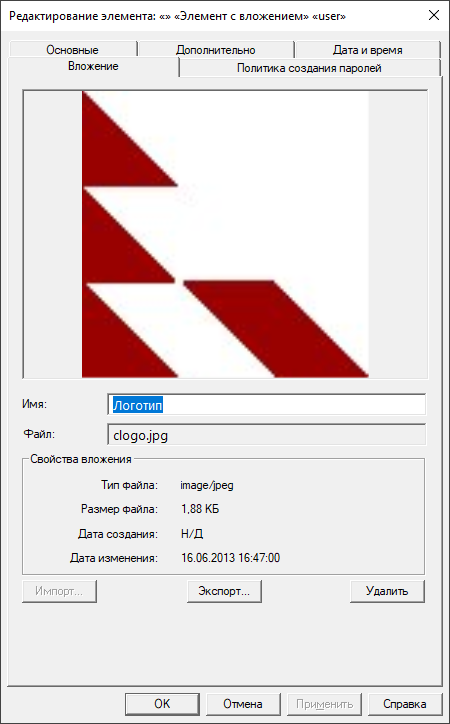

Имена пользователей, пароли и группы, а также другие параметры настраиваются на пяти вкладках:

Password Safe позволяет присоединять к элементу вложение. Это может быть изображение (например, JPEG-файл), документ (текстовый, PDF, ...), или любой другой файл. Если доступно, для изображений на этой же вкладке отображается миниатюра. При экспорте вложения сохранённый файл будет идентичен тому, что использовался при импорте. Если вложение больше не требуется, его можно удалить.
Щёлкните по кнопке «Импорт...» и выберите нужный файл. По умолчанию для выбора доступны только файлы с расширениями, соответствующие некоторым форматам изображений (.jpeg, .png и пр.). Для присоединения других типов файлов в выпадающем списке справа от поля ввода имени файла выберите фильтр «Все файлы (*.*)».
К элементу может быть привязано не более одного вложения, поэтому кнопка «Импорт...» блокируется, если вложение уже присоединено. Для замены вложения сначала удалите ранее присоединённое с помощью кнопки «Удалить».
Для вложения можно задать имя (описание). Оно не связано с именем импортированного файла.
Щёлкните по кнопке «Экспорт...» и выберите расположение и имя файла.
Щёлкните по кнопке «Удалить». Если удаление было выполнено случайно, нажмите на кнопку «Отмена» внизу и откажитесь от сохранения изменений. Если уже нажали на кнопку «OK, но ещё не сохранили изменения в контейнере, удаление можно откатить, выбрав «Отменить» в меню «Правка» (или используя комбинацию Ctrl+Z).